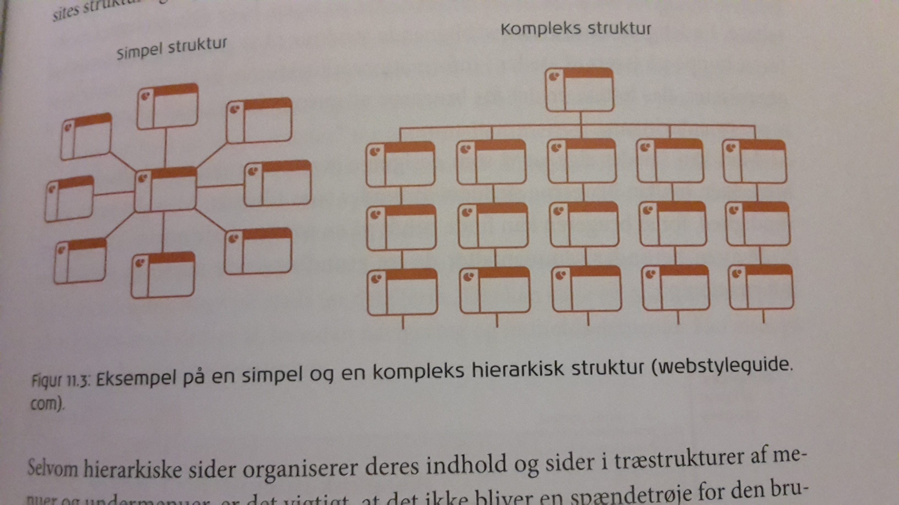

Informationsarkitektur
Informationsarkitektur
Informationsarkitektur er den model der beskriver hvordan eksempelvis et website er organiseret. Det er det arbejde der ligger i at strukturere, navngive, opbygge etc. informationen så det er let og intuitiv for brugerne at danne overblik.
(Kommunikation i Multimediedesign kap. 11 s. 165)
Link til opgave
Organisering af information
Her kan der bruges en indholdsopgørelse:
- Link – sidens URL
- Format – f.eks. HTML, PDF, DOC, PPT
- Meta page titel – titel på siden
- Søgeord – søgeord
- Indhold – beskrivelse af sidens indhold
- Ansvarlig – personen, som er ansvarlig for at vedligeholde sidens indhold
- Dato for sidste opdatering
- Review – status og kommentarer
De fem hattehylder
The five hats rang beskriver de grundlæggende måder at organisere information på:
- Kategori: Organisering efter fællestræk eller relaterede emner, f.eks. produktkategorier
- Tid: Organisering efter en tidslinje eller historik, f.eks. købs- eller bookingsekvenser
- Lokation: Organisering efter en fysisk eller geografisk placering, f.eks. kort
- Alfabetisk: Organisering efter de første bogstaver eller navne på emner, f.eks. ordnede lister over emner
- Kontinuum: Organisering efter målt værdi, f.eks. pris eller størrelse
Brainstorm
En anden måde at strukturere indholdet på, er at lave en brainstorm. Denne laves ved at der nedskrives forslag til informationsoverskrifterne på eksempelvis post-its. Herefter laves der en sortering; dette kan være at sedlerne indordnes i informationskategorier indtil alle sedlerne er underlagt en kategori, eller der kan laves et mindmap. Denne proces fortsættes indtil der er opnået konsensus.
Kortsortering
Denne teknik anvendes både til design og evaluering af websitets organisering.
Der eksisterer to varianter af metoden:
- Testdeltagerne får udleveret et kort ad gangen og bliver bedt om at lægge kortene sammen i de grupper, de kan forstås i. Herefter får hver kortgruppe tildelt en overskrift
- Her lægges forskellige kort med overskrifter på bordet. De resterende kort udleveres herefter til testdeltagerne og skal placeres i de forud etablerede grupper Til sidst skal testdeltagerne fortælle om deres overvejelser og udfordringer
Website-strukturer
Sekvens
Dette er den mest enkle måde at organisere information på og går ud på at der kun læses en side af gangen. Strukturen begrænser brugerens interaktionsmuligheder til et klik på ”fortsæt”, men er let at forstå fordi der er fuld kontrol over rækkefølgen.
Hierarki

Denne struktur er den mest anvendte til websites og kræver en analytisk tilgang til sitets indhold, fordi hierarkier kun fungerer med velorganiseret materiale.
Den mest simple hierarkiske struktur er formet som en stjerne, idet der fra en forside linkes til et antal sider. Navigeringen består ofte af en simpel liste over undersider samt et link til forsiden.
Webstruktur

Denne struktur muliggør egne indfald fra brugeren og er derved karakteriseret ved at have meget få begrænsninger i bevægelsesmønstret. Dog er den svær at forstå for brugeren.
I praksis bruges der en kombination af de tre webstrukturer; sider ordnet hierarkisk udgør grundstrukturen, mens den sekventielle struktur bruges hvor data gemmes i en database, og til sidst bruges den weblignende struktur til at giver brugeren mulighed for at springe på tværs af informationsarkitekturen.
Visualisering af arkitekturen
En god måde at visualisere organiseringen af websitets design, er wireframes. Disse skaber et fundament for designet, hvor fokus bliver på informationsarkitekturen og det strukturelle.
Navigeringsdesign
Navigering handler grundlæggende om to ting; at komme fra et sted til et andet og at lokalisere hvor man befinder sig. På mange måder føles navigering på nettet, som at bevæge sig rundt i det fysiske rum. Forskellen er, at på nettet er det let at skyde genveje uden at have kendskab til landskabet.
Gangstertesten
Denne test går ud på at man skal forestille sig, at man ligger i et bagagerum i en bil og bliver kørt rundt uden at vide hvorhen. Når man så bliver lukket ud skal man prøve at orientere sig. Ligesom når man havner på et website.
Testen bruges til test af sitets informationsarkitektur og navigering, og kan anvendes til både de tidlige designskitser og eksisterende sider.